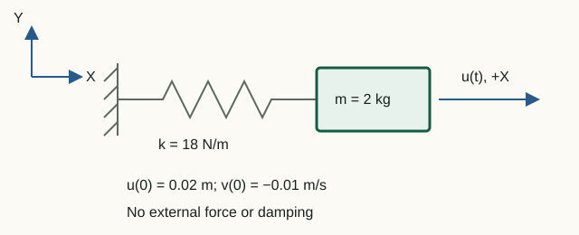

Average acceleration method
Transient analysis finds the system state at successive instants. The current MKE-F implementation considers a linear elastic undamped system and uses the implicit Newmark method with β = 1/4 and γ = 1/2.
Equation of motion and reduction
The free DOFs satisfy:
Mff a(t) + Kff u(t) = Ff(t)
This is the linear undamped special case of a more general equation with damping matrix C and a nonlinear restoring force. In MKE-F, C = 0, there is no nonlinear term, and constrained components of the full histories remain exactly zero.
A single time grid
For step Δt and requested duration T the step count is fix(T/dt). Every returned history has N + 1 columns:
t0 = 0, t1 = Δt, …, tN = NΔt
If T/Δt is not an integer, the actual duration result.duration is shorter than the requested result.requestedDuration. Octave column numbers are one greater than step numbers: column 1 corresponds to t = 0.
Initial state
The user may specify full vectors u0 and v0. Their constrained components must be zero. Initial acceleration is not an independent input; it is computed from equilibrium:
a0 = Mff−1[Ff(0) − Kffu0]
Thus all three initial histories begin from one physically consistent state.
Newmark approximations
Displacement and velocity at the next step are related to accelerations:
un+1 = un + Δt vn + Δt2[(1/2 − β)an + βan+1]
vn+1 = vn + Δt[(1 − γ)an + γan+1]
The choice β = 1/4, γ = 1/2 gives the average acceleration method. For a linear system it is second-order accurate and unconditionally stable, but stability does not guarantee adequate accuracy when Δt is too large.
Effective stiffness
The code uses these coefficients:
a0 = 1/(beta*dt^2);
a2 = 1/(beta*dt);
a3 = 1/(2*beta) - 1;One system is solved at each step:
Keff un+1 = Fn+1 + M(a0un + a2vn + a3an)
Keff = Kff + a0Mff
The matrix Keff is constant, so solveTransient performs Cholesky factorization once and reuses it at every step. Acceleration and velocity are updated after solving.
Impulse on the discrete grid
A type 12 load is nonzero only in column t = Δt. For a single-step rectangular pulse:
Idiscrete = F0Δt
When comparing grids with different Δt, preserve the impulse rather than the amplitude: F0 = I/Δt. Otherwise refining the step changes both the physical excitation and the numerical error.
Convergence and energy
For a free undamped oscillator with ω = √(k/m):
u(t) = u0cos(ωt) + [v0/ω]sin(ωt)
Halving Δt should reduce the error of a second-order method by about a factor of four. This is more reliable than a single check at one step size.
Total mechanical energy of the free system:
E(t) = 1/2 vTMv + 1/2 uTKu
For a linear undamped problem, the average acceleration method introduces no algorithmic damping, and energy is conserved to rounding accuracy. Under external loading, energy changes through external work, so constant energy is no longer an expected invariant.
Single-sided spectrum
computeSingleSidedSpectrum applies an FFT to each displacement row and returns nonnegative frequencies. For Ns samples:
Δf = 1/(NsΔt)
The free-oscillator spectral peak should lie near its natural frequency, but finite duration and a frequency falling between discrete bins cause leakage. A reasonable check therefore allows for resolution Δf instead of demanding bitwise frequency agreement.
Running the analysis and viewing results
In Octave, from the project root, run:
addpath(pwd);
setup;
problem = StructFEProblem(fullfile( ...
'examples', 'cases', 'CaseBeam.txt'));
model = problem.GetAnalysisModel();
result = problem.RunTransient(1e-4, 1e-2, 3, 2);
options = struct(...
'title', 'Transient response', ...
'lengthUnit', 'm', 'forceUnit', 'N', ...
'momentUnit', 'N*m', 'timeUnit', 's', ...
'transientFields', {{'displacements', 'velocities', ...
'accelerations', 'loadHistory', ...
'reactions', 'spectrum'}}, ...
'timeStride', 1, 'prettyPrint', true);
exportPostprocessorData(model, result, ...
fullfile('output', 'transient-history.json'), options);From the repository root, run docker compose up --build (or docker-compose up --build) and open the preprocessor. Load examples/cases/CasePreprocessorTransient.txt using Open TXT and click Run analysis. The interface shows the queue, elapsed time and Octave log, then automatically opens the full history in the postprocessor. To retain the result after stopping Compose, click Download JSON.
Then open postprocessor/index.html
by double-clicking in Chrome and drag onto the page output/transient-history.json
or select it using Open JSON. A supplied example is in
examples/results/transient-history.json.
No local server is needed.
Select a node, DOF and plotted quantity. The time slider and a click on the chart select an exact exported sample. Play starts animation; Frame stride changes the playback step. SVG and PNG save the current frame together with the chart and selection settings.
If the export specifies timeStride > 1, the viewer clearly indicates a downsampled history. The field reactions stores the full dynamic residual M*a + K*u - F; its rows for constrained DOFs are the support reactions.
Laboratory 06. Free vibration: Newmark accuracy
The aim is to compare numerical and analytical motion and determine convergence order from three grids.

Input data and notation
m = 2 kg, k = 18 N/m, u₀ = 0.02 m, v₀ = −0.01 m/s. Force and damping are zero. The supplied example calculates three periods with 50, 100 and 200 steps per period; β = 1/4, γ = 1/2.
Before running: hand calculations
- Find ω = √(k/m), f = ω/(2π), T = 1/f and the initial acceleration a₀ = −ku₀/m.
- Write u(t) = u₀cos(ωt) + (v₀/ω)sin(ωt). Find the initial energy E₀ = mv₀²/2 + ku₀²/2.
Run in Octave
Run from the project root. The supplied function prints the results; you do not need to edit its code for this exercise.
addpath(pwd);
setup;
addpath(fullfile(pwd, "reference", "examples"));
r = example_06_newmark_sdof();Working with the results
- Compare
Natural frequency,periodandInitial accelerationwith your calculation. - From
Steps per period and maximum displacement errorrecord the three errors. Calculate the 50-step/100-step and 100-step/200-step error ratios. Why does a ratio near four indicate second order? - Use the commands below to plot exact and numerical motion on the finest grid, then their difference. A separate difference plot reveals errors even when the original curves appear identical.
- Compare
Relative energy driftwith the motion error. Explain why energy conservation does not imply exact phase agreement. - Compare
Spectrum peakwith the natural frequency: the difference should be within the printedbin width. Using the formula Δf = 1/(NΔt) predict the effect of shortening the recording duration at the same step size.
After running, execute in Octave with a graphics window available:
figure;
plot(r.time, r.displacements(1,:), "-", ...
r.time, r.exactDisplacement, "--");
xlabel("t [s]"); ylabel("u [m]");
legend("Newmark", "Exact"); grid on;
figure;
plot(r.time, r.displacements(1,:) - r.exactDisplacement);
xlabel("t [s]"); ylabel("u - u_exact [m]"); grid on;For a headless run, record a few value pairs and their differences instead of plotting:
idx = round(linspace(1, numel(r.time), 13));
disp([r.time(idx).', r.displacements(1,idx).', ...
r.exactDisplacement(idx).', ...
(r.displacements(1,idx) - r.exactDisplacement(idx)).']);ω = 3 rad/s, f ≈ 0.477465 Hz, T ≈ 2.0944 s, a₀ = −0.18 m/s², E₀ = 0.0037 J. Halving the step reduces error by about four; relative energy drift is below 10⁻¹⁰. A shorter record increases Δf and worsens frequency resolution.
What to include in the report
Hand calculations, the errors and their ratios, two plots (or a value table for a headless run), an explanation of energy conservation versus motion accuracy, and a conclusion about spectral resolution.
Chapter source code
solveTransient.m— average acceleration method and full histories;buildTransientLoad.m— loads on the common time grid;computeSingleSidedSpectrum.m— single-sided amplitude spectrum;example_06_newmark_sdof.m— analytical comparison and convergence.
Theory and project history
- Henri P. Gavin, Numerical Integration in Structural Dynamics, Duke University, revision of July 21, 2025: “The Newmark-β method — incremental formulation.” Equations (22)–(23) give the general Newmark approximations, and (24)–(30) the incremental derivation; (27)–(30) specialize to β = 1/6. MKE-F uses β = 1/4, the linear undamped case and a total-displacement formulation.
- K.-J. Bathe, E. L. Wilson, Numerical Methods in Finite Element Analysis, Russian translation of the 1976 English edition, Moscow: Stroyizdat, 1982, chapter 8, p. 271.
- “MKE-F — Newmark method” — historical description of version 0.4 from 2017; old commands and numerical results do not document the current implementation.
MPC
Newmark integrates independent coordinates with Kr, Mr and TᵀF(t). Displacement, velocity and acceleration are reconstructed with T. Initial displacement and velocity must satisfy SPC and MPC constraints; incompatible values are rejected. Dynamic constraint forces use r = Ma + Ku − F.